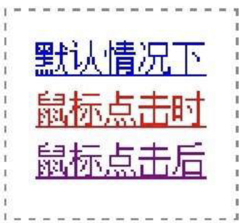
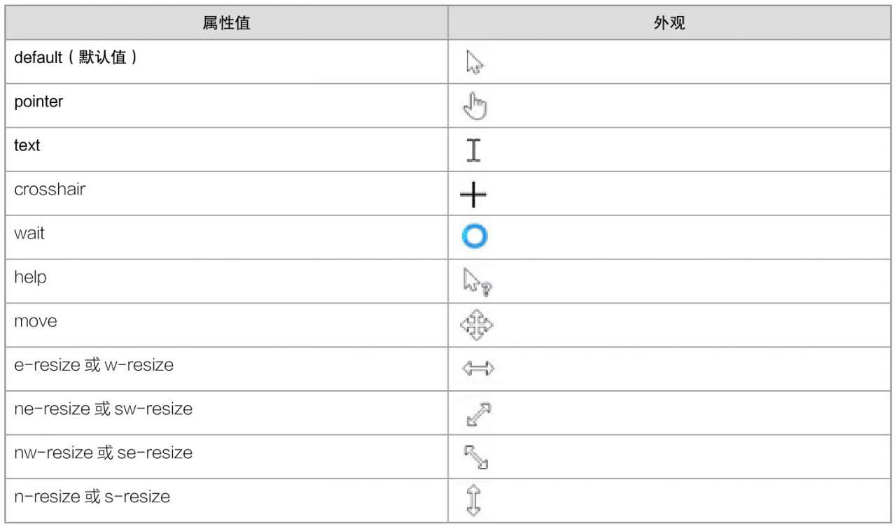

在浏览器中，超链接的外观在默认情况、鼠标点击时／点击后是显示不同的样式的。
鼠标点击时是指鼠标点击链接的一瞬间显示的颜色。
使用「超链接伪类」来定义超链接在鼠标点击的不同时期的样式。
示例：
伪类 :hover 可以定义任何一个元素在鼠标经过时的样式。
语法：元素:hover { …… }
示例：
定义鼠标样式有两种方法：
使用 cursor 定义浏览器鼠标样式。
语法：cursor: 取值;
示例：
与定义浏览器鼠标样式基本一直，使用 url() 设置自定义鼠标的图片地址。
语法：cursor: url(鼠标图片地址), 取值;
示例：